Guida Completa FamLedger
Benvenuto nella documentazione ufficiale di FamLedger. Questa guida è strutturata passo dopo passo per spiegarti con assoluta semplicità come configurare e utilizzare al meglio ogni singola funzionalità dell'app.
👋 Capitolo 1: Benvenuto e Primo Avvio
FamLedger è progettata con una filosofia rigorosa: "nessun server centrale, nessuna registrazione e 100% offline". Tutti i dati che inserisci rimangono blindati all'interno della memoria locale del tuo smartphone.
La Schermata di Benvenuto
Al primissimo avvio dell'applicazione, ti verrà chiesto semplicemente di inserire il "tuo Nome" (es. Antonio) per configurare l'utente principale. Non ti verrà richiesta alcuna password o registrazione email: sarai subito pronto ad usare l'app!
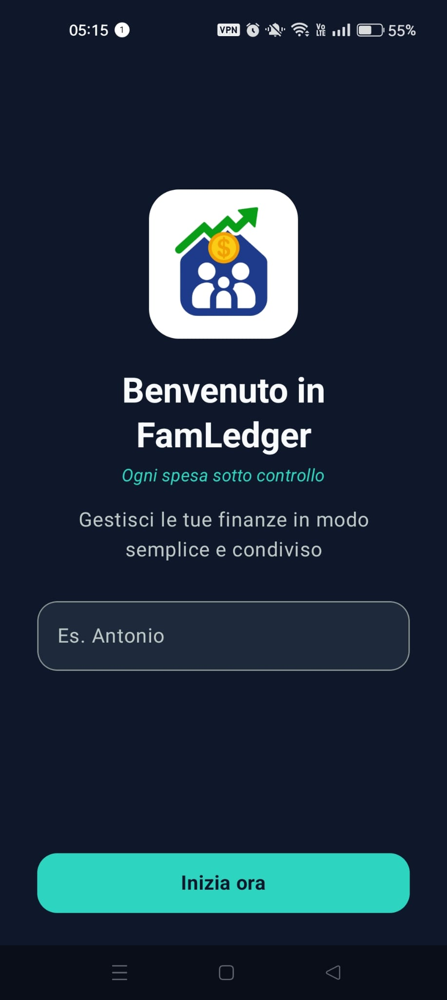
La schermata iniziale di benvenuto per l'inserimento del nome
Impostare una Password di Sicurezza (Opzionale)
Se desideri proteggere l'applicazione da sguardi indiscreti, puoi abilitare una "Password di Accesso":
- Vai su Impostazioni (l'icona dell'ingranaggio nel menu in basso).
- Scorri fino alla voce "Sicurezza" ed espandi il menu per creare una password
- Scegli una password robusta e inserisci un "Suggerimento Password" molto chiaro (es. "Il nome del mio cane").
Una volta attivata, ad ogni avvio l'applicazione chiederà la password. Il suggerimento ti verrà mostrato immediatamente al primo tentativo errato per aiutarti a ricordare la chiave.
🏦 Capitolo 2: Gestione dei Conti
Prima di inserire qualsiasi spesa, devi definire "dove sono i tuoi soldi". In FamLedger, ogni spesa o entrata deve essere associata ad un conto specifico.
Creare un Nuovo Conto
- Vai nella sezione Impostazioni e poi Gestione Conti dal menu in basso.
- Inserisci il Nome del Conto (es. Conto Corrente, Contanti).
- Scegli il proprietario
- Premi Salva.
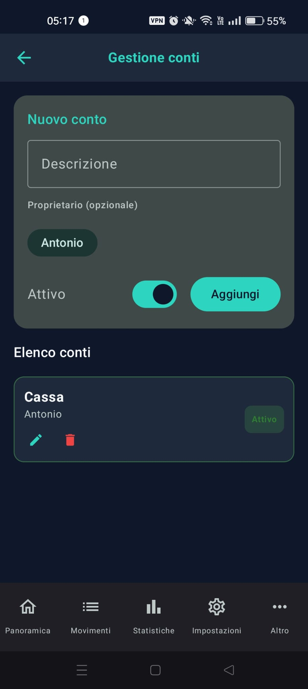
La schermata creazione conto
💸 Capitolo 3: Movimenti e Transazioni
Registrare le spese quotidiane è un'operazione che richiede pochissimi secondi. FamLedger ti permette di tracciare tre tipi di movimenti: "Uscite, Entrate e Giroconti".
1. Spese ed Entrate
Dalla Dashboard principale, fai tap sul tasto "+" e compila i campi:
- Importo: La cifra spesa o ricevuta.
- Descrizione: Una breve etichetta (es. "Spesa").
- Conto: Su quale conto deve essere addebitata o accreditata la somma.
- Categoria: Seleziona o crea una categoria (es. Alimentari, Auto, Stipendio) per categorizzare il bilancio.
- Spesa condivisa: Definisci se una spesa è da dividere con qualcuno.
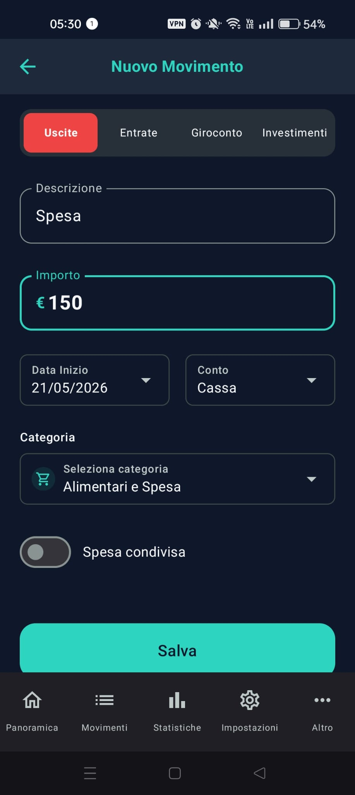
La schermata inserimento movimento
2. Giroconti (Trasferimenti Interni)
Se sposti denaro da un tuo conto a un altro (ad esempio prelevi 100€ dal bancomat per metterli nel portafoglio dei Contanti): attiva il selettore Giroconto (Trasferimento) in cima alla schermata. Ti verranno chiesti il "Conto di Partenza" (da dove escono i soldi) e il "Conto di Destinazione" (dove entrano).
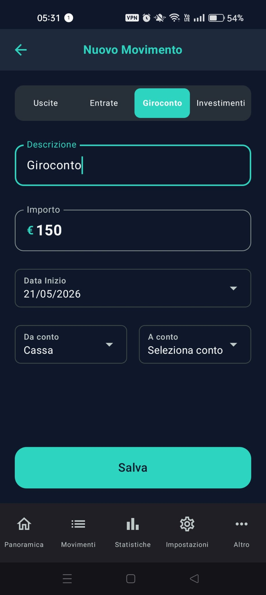
La schermata inserimento giroconto
3. Movimenti Ricorrenti (Bollette, Stipendi, Abbonamenti)
Se hai spese fisse mensili (es. Affitto):
- Vai in Impostazioni > Movimenti Ricorrenti.
- Premi "+" e imposta la ricorrenza (es. Ogni 1 Mese, Ogni 1 Anno).
- L'app genererà automaticamente la transazione, senza che tu debba fare nulla!
📈 Capitolo 4: Investimenti (Mercati e Risparmi) BETA
FamLedger include una potente sezione "Investimenti" studiata sia per chi investe in borsa, sia per chi preferisce strumenti sicuri a rendimento fisso.
Mercati (Variabile)
Usa questa sezione per ETF, Azioni o Criptovalute. L'app è dotata di un integratore online automatico. Ti basta inserire il "Ticker" ufficiale (es. SWDA.MI o AAPL) e attivare la ricerca automatica. L'app scaricherà il prezzo aggiornato e calcolerà il tuo profitto o perdita basandosi sul tuo "Prezzo Medio di Carico (PMC)" e la "Quantità" inserita.
Risparmi (Fisso)
Usa questa sezione per "Conti Deposito", BTP o Buoni Fruttiferi. Qui non serve un ticker: imposti il "Capitale Depositato", il "Tasso di Interesse Annuo (%)", l'"Aliquota Fiscale" (es. 26% o 12.5% per i titoli di stato) e la "Data di decorrenza". L'app calcolerà giorno per giorno gli interessi maturati in tempo reale!
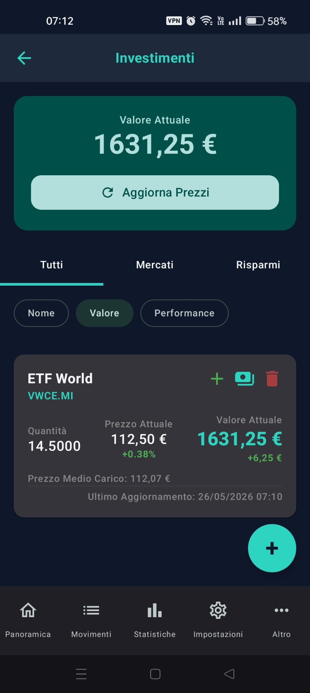
La schermata investimenti
👥 Capitolo 5: Spese Condivise (Co-debitori e Rimborsi)
Una delle funzioni più potenti di FamLedger è la gestione dei conti condivisi (ideale per coppie, famiglie o coinquilini) per rispondere alla classica domanda: "Chi deve dare quanto a chi?".
1. Aggiungere i Partecipanti
Vai in Impostazioni > Partecipanti e inserisci i nomi dei tuoi familiari (es. Marco, Giulia).
2. Registrare una Spesa di Gruppo
Quando inserisci una spesa (es. Spesa alimentare da 150€ pagata interamente da te):
- Nel form di inserimento spesa, scorri in basso fino alla sezione Spesa condivisa.
- Seleziona i partecipanti coinvolti (es. Giulia).
- Scegli se dividere in parti uguali o se assegnare "quote personalizzate" (es. 75€ a Giulia).
- Salva la spesa. L'app registrerà che tu hai anticipato 150€ e che Giulia ti deve 75€
- Nota per la categoria Prestito: Una categoria di sistema eccezionalmente potente progettata per le spese anticipate. A differenza delle spese condivise normali (dove la cifra viene ripartita includendo anche la quota di chi ha pagato), quando registri un movimento contrassegnato come Prestito, l'app assegna il 100% dell'importo come debito esclusivo suddiviso tra gli altri partecipanti selezionati. La quota di chi ha effettuato il pagamento viene posta automaticamente a zero.
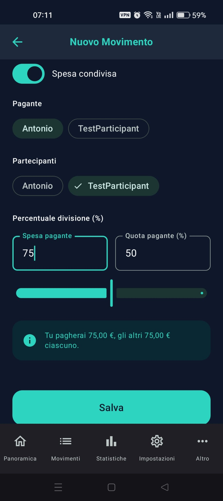
La schermata spesa condivisa
3. Saldo Veloce dei Debiti (Singolo o Tutti)
Dalla pagina principale, la sezione Situazione debiti ti mostrerà un riepilogo in tempo reale. Per saldare i debiti, hai due possibilità:
- Saldare singolo movimento: Entra in Movimenti (menu in basso) e clicca su "Salda" relativa al movimento che vuoi saldare. L'app creerà automaticamente un movimento di rimborso azzerando il debito.
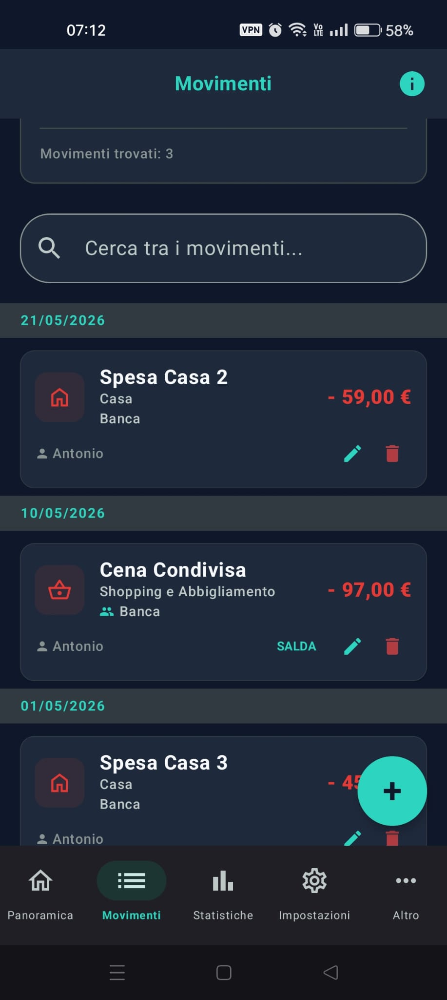
Schermata salda movimento singolo
- Saldare tutto: Dalla pagina iniziale potrai cliccare su Salda tutto per poter saldare tutti i debiti in una sola volta
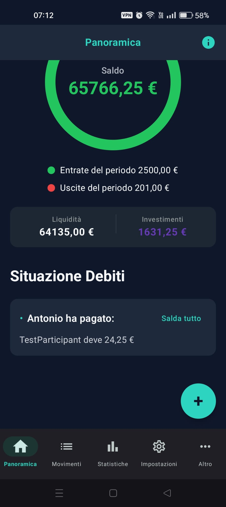
Schermata salda tutti
🎯 Capitolo 6: Obiettivi
Gli "Obiettivi" (Target) ti consentono di pianificare e tracciare i tuoi risparmi per progetti futuri concreti, come l'acquisto di una nuova auto, una vacanza o la creazione di un fondo di emergenza.
Creare e Tracciare un Obiettivo
- Vai alla schermata Obiettivi dal menu "Altro" dell'app.
- Fai tap sul pulsante "+" in basso a destra.
- Inserisci una Descrizione (es. Nuova Macchina).
- Imposta il "Target" che desideri accumulare (es. 15.000€).
- Definisci una "Data Scadenza" entro la quale desideri completare il risparmio.
- Associa un "Conto Collegato" su cui accumuli questi risparmi. (opzionale)
L'applicazione monitorerà automaticamente i progressi, mostrandoti una "barra percentuale (%)" visiva per tracciare quanto sei vicino al raggiungimento del traguardo.
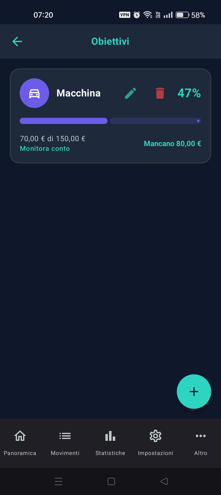
Schermata Obiettivi
🏆 Capitolo 7: Gamification
FamLedger rende la gestione delle finanze personali divertente e stimolante grazie a un innovativo sistema di "Gamification".
Sbloccare le Medaglie Finanziarie
L'educazione finanziaria si unisce al game design! Man mano che utilizzi l'applicazione in modo sano e costante, sbloccherai automaticamente dei traguardi e riceverai delle medaglie virtuali:
- Cecchino del Budget: Assegnato se rimani entro il tuo budget mensile di spesa con estrema precisione (spendendo tra il 90% e il 100% dell'importo pianificato).
- Salto di Qualità: Sbloccato se in un mese il tuo surplus di risparmio (Entrate - Uscite) supera il 30% del totale delle entrate mensili.
- Cacciatore di Obiettivi: Raggiunto non appena completi con successo almeno uno dei tuoi obiettivi di risparmio.
- Tabula Rasa: Sbloccato nel momento in cui saldi tutti i debiti attivi con gli altri partecipanti del bilancio condiviso.
- Risparmiatore Costante: Un premio alla tua costanza, sbloccato mantenendo un surplus positivo (entrate maggiori delle uscite) per ben 6 mesi consecutivi.
- Early Bird: Assegnato se registri almeno un movimento nei primi 5 giorni del mese per 3 mesi consecutivi.
- Pianificatore Consapevole: Medaglia sbloccata "Una Tantum" nel momento in cui configuri per la prima volta un budget di spesa mensile.
- Debito Estinto: Un traguardo speciale "Una Tantum" sbloccato quando tutti i debiti storici registrati nell'applicazione risultano definitivamente saldati.
- Traguardi di Patrimonio Netto (Una Tantum): Cinque medaglie d'oro esclusive che celebrano la crescita del tuo patrimonio complessivo (somma di conti liquidi e controvalore degli investimenti):
- L'Inizio del Viaggio: Raggiungere un patrimonio netto di almeno 10.000.
- Costruttore di Capitali: Raggiungere un patrimonio netto di almeno 50.000.
- Patrimonio a Sei Cifre: Raggiungere un patrimonio netto di almeno 100.000.
- Libertà Finanziaria: Raggiungere l'incredibile traguardo di 250.000 in patrimonio netto totale.
- Indipendenza Finanziaria: Raggiungere l'incredibile traguardo di 500.000 in patrimonio netto totale.
Schermata traguardi
🔍 Capitolo 8: Rilevamento delle Anomalie di Spesa
La schermata Anomalie agisce come una sentinella intelligente per il tuo bilancio familiare. Invece di limitarsi a mostrare un elenco di spese, l'applicazione confronta in tempo reale ogni singola spesa del mese corrente con la tua media storica di spesa per transazione in quella determinata categoria (di default analizzando lo storico fino a 24 mesi precedenti (valore modificabile dalle impostazioni)).
Se una specifica transazione supera questa media storica oltre una determinata percentuale di tolleranza, l'app la segnalerà immediatamente come spesa anomala.
Come funziona l'algoritmo di rilevamento?
L'app analizza le transazioni registrate ed elabora tre diversi livelli di severità per lo sforamento, basandosi sulle soglie percentuali configurabili in Impostazioni > Soglie Anomalia:
- 🔵 Anomalia Bassa: Segnalata se la spesa supera la media storica della categoria oltre la soglia minima impostata (es. superiore al +10%). Viene visualizzata con un'etichetta blu.
- 🟡 Anomalia Media: Segnalata se la spesa supera la media storica oltre la soglia intermedia (es. superiore al +30%). Viene evidenziata in giallo/arancione.
- 🔴 Anomalia Alta: Rilevata quando la singola transazione registra un picco eccezionale che supera la media oltre la soglia massima (es. superiore al +50%). Viene mostrata con un'etichetta rossa per richiamare subito la tua attenzione.
All'interno della pagina Anomalie, puoi utilizzare i comodi filtri in alto per analizzare periodi specifici (selezionando Anno e Mese) oppure per filtrare le anomalie visualizzate in base al loro livello di gravità (Tutti, Bassa, Media, Alta).
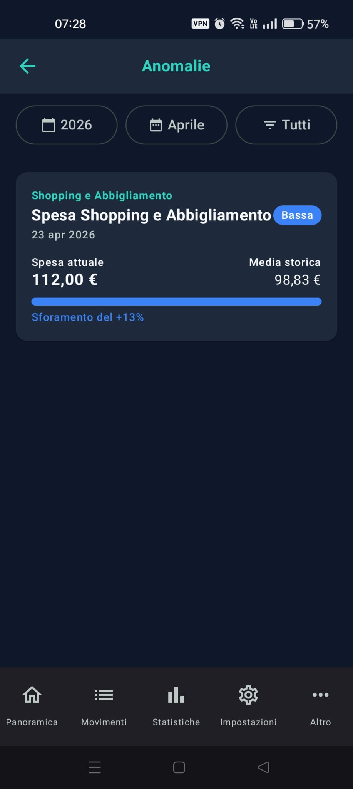
Schermata anomalie
⚙️ Capitolo 9: Impostazioni dell'Applicazione
La schermata "Impostazioni" è il centro di controllo da cui configurare l'intero comportamento di FamLedger. È un capitolo fondamentale che include diversi strumenti avanzati di personalizzazione del tuo bilancio.
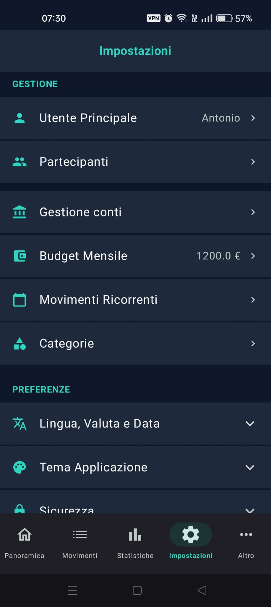
Schermata impostazioni
🏷️ 9.1 Gestione delle Categorie Personalizzate
In FamLedger sei libero di creare le categorie di spesa ed entrata che più si adattano alla tua vita reale. L'app non ti impone un set rigido!
Creare una Categoria Personalizzata:
- Accedi alla sezione Categorie (dal menu Impostazioni > Categorie).
- Troverai direttamente in cima alla schermata il comodo pannello di inserimento/modifica.
- Inserisci il nome che desideri dare alla categoria nel campo Nome Categoria (es. Palestra o Ristoranti).
- Scegli la tipologia della categoria tra Uscite o Entrate selezionando i filtri corrispondenti. Il colore identificativo (rosso per le uscite e verde per le entrate) viene abbinato in modo del tutto automatico e dinamico dall'app per mantenere l'armonia cromatica, perciò non dovrai selezionarlo manualmente.
- Tocca il pulsante circolare dell'icona a sinistra del modulo per aprire il pannello di selezione inferiore (bottom sheet) e scegli l'icona personalizzata che preferisci tra le tantissime a disposizione.
- Premi il pulsante Aggiungi (o Salva se stai modificando una categoria esistente) per rendere subito attiva la categoria.
Puoi modificare o eliminare in qualsiasi momento le categorie create (ad eccezione di quelle di sistema) tramite le icone di modifica (matita) ed eliminazione (cestino) posizionate a fianco di ciascuna voce nell'elenco.
FamLedger include alcune Categorie di Sistema speciali che non possono essere modificate o eliminate in quanto necessarie per il corretto funzionamento delle automazioni dell'app:
- Giroconto: Utilizzata automaticamente quando sposti fondi tra due dei tuoi conti (trasferimenti interni).
- Rimborso, Saldo, Investimento, Stipendio, Altro: Categorie predefinite ed essenziali per tracciare le transazioni automatiche del bilancio familiare.
- Prestito: Una categoria di sistema eccezionalmente potente progettata per le spese anticipate. A differenza delle spese condivise normali (dove la cifra viene ripartita includendo anche la quota di chi ha pagato), quando registri un movimento contrassegnato come Prestito, l'app assegna il 100% dell'importo come debito esclusivo suddiviso tra gli altri partecipanti selezionati. La quota di chi ha effettuato il pagamento viene posta automaticamente a zero.
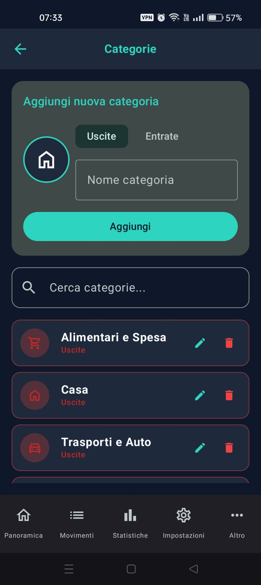
Schermata categorie
🔄 9.2 Movimenti Ricorrenti ed Automazioni
Non inserire a mano le stesse transazioni ogni mese! Per bollette, abbonamenti (Netflix, Spotify), affitto o stipendi, imposta una ricorrenza automatica:
- In Impostazioni > Movimenti Ricorrenti, premi il tasto "+".
- Compila i dettagli (importo, descrizione, conto addebito e categoria).
- Imposta la "Frequenza" (scegliendo tra Settimanale, Mensile o Annuale).
- All'arrivo della scadenza, FamLedger inserirà automaticamente la transazione nel tuo bilancio.
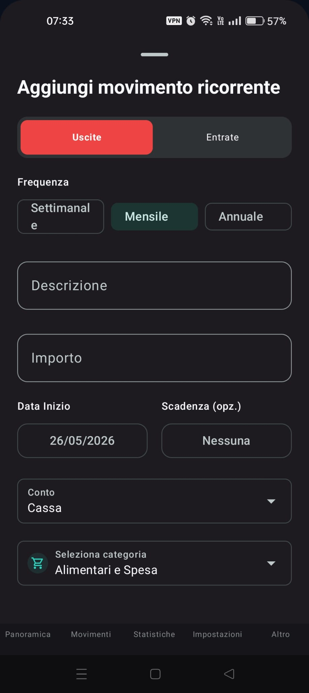
Schermata movimenti ricorrenti
🔒 9.3 Sicurezza e Privacy (Password & Offuscamento)
FamLedger ti offre due livelli avanzati per tutelare i tuoi dati sensibili quando usi l'app in pubblico:
- 🔒 Password di Sicurezza (Offline): Se attivata nelle impostazioni, protegge l'accesso all'applicazione richiedendo la password all'avvio. Nel caso in cui dovessi inserire una password errata, il suggerimento password da te configurato ti verrà mostrato immediatamente fin dal primo tentativo errato, aiutandoti a sbloccare subito i tuoi dati in caso di piccoli vuoti di memoria.
- 🕶️ Modalità Offusca Importi: Attivando questo switch, tutte le cifre e i saldi presenti nella Dashboard principale e nei conti verranno temporaneamente rimpiazzati da dei pallini discreti (es. •••,•• €). Potrai svelarli temporaneamente con un tap, ideale quando apri l'app in metropolitana o in presenza di altre persone!
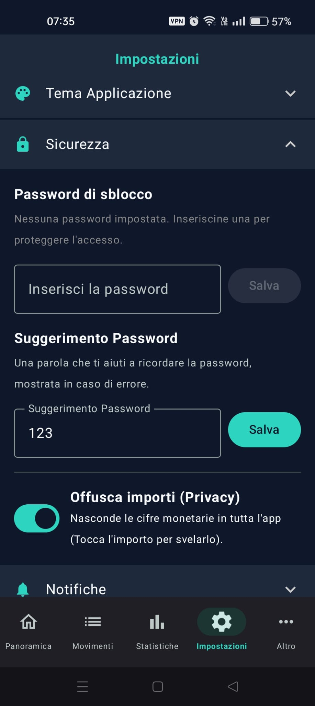
Schermata sicurezza
💱 9.4 Profilo, Partecipanti e Preferenze Locali
- Modifica Profilo: Cambia il tuo nome in qualunque momento.
- Gestione Partecipanti: Aggiungi, modifica o disattiva i familiari/coniugi/coinquilini con cui dividi i debiti comuni.
- Lingua e Valuta: Scegli runtime la tua valuta preferita e la localizzazione in-app tra le 6 lingue disponibili (Italiano, Inglese, Spagnolo, Francese, Tedesco, Portoghese).
👑 Capitolo 10: FamLedger PRO (Funzionalità Esclusive)
Per gli utenti che desiderano analizzare a fondo la propria situazione patrimoniale e garantire la sicurezza dei propri dati storici nel tempo, abbiamo creato "FamLedger PRO". Un unico acquisto una tantum (compri una volta sola nello Store ed è tuo per sempre) che sblocca il pieno potenziale dell'applicazione e rappresenta un supporto diretto e fondamentale al lavoro e alla dedizione del nostro team indipendente. Il tuo acquisto ci permette di continuare a migliorare FamLedger, mantenendola un'app sicura, 100% offline, priva di tracciamenti e totalmente incentrata sulla tua privacy!
📊 10.1 Grafici e Statistiche del Patrimonio Netto
Comprendere a fondo l'andamento della propria ricchezza nel tempo è fondamentale per prendere decisioni consapevoli.
Attivando la versione PRO avrai accesso a una serie di strumenti di analisi avanzati: dal grafico sulle spese mensili al confronto storico tra i mesi di due anni a scelta, fino al grafico a linee che mostra l'evoluzione del tuo Patrimonio Netto complessivo. Quest'ultimo valore viene calcolato in tempo reale sommando il saldo di tutti i tuoi conti e il controvalore aggiornato di tutti i tuoi investimenti (sia mercati variabili che rendimenti fissi).
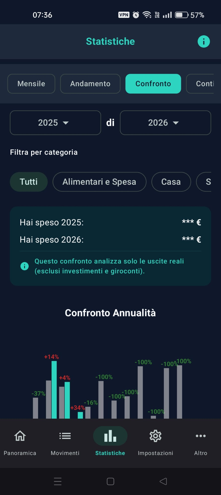
Schermata statistiche
💾 10.2 Backup, Ripristino e Migrazioni (JSON/CSV)
Poiché FamLedger è un'applicazione al 100% offline, fare il backup è fondamentale. Se cambi telefono o formatti il dispositivo, avrai bisogno di questo file per non perdere lo storico delle tue finanze.
Esportazione JSON: Crea un file contenente tutti i dati della app, pronto per essere condiviso su Google Drive, inviato via email o salvato sul tuo computer.
Esportazione CSV: Ti consente di esportare l'elenco delle transazioni in un foglio di calcolo compatibile con Excel o Google Sheets.
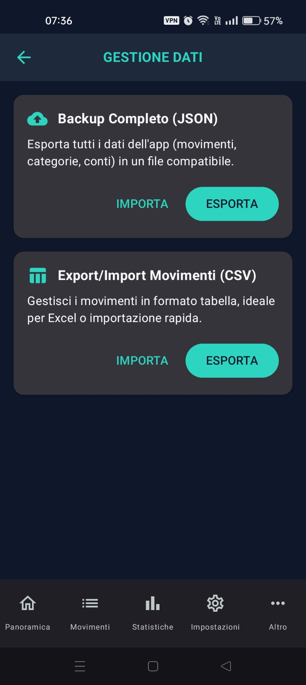
Schermata backup
✨ Novità & Aggiornamenti
FamLedger è in costante evoluzione. In questa sezione trovi le principali novità introdotte nei recenti aggiornamenti dell'applicazione.
🎙️ Inserimento Vocale Intelligente [BETA]
È stata introdotta la possibilità di registrare le tue spese direttamente con la voce! Cliccando sull'icona del microfono a fianco del pulsante "+" nella Dashboard o nella lista dei Movimenti, potrai dettare le tue transazioni in modo rapido e comodo.
L'app supporta sia un metodo strutturato chiave-valore (Consigliato) per una precisione ottimale:
"Descrizione pizza Importo 15 Data ieri Categoria Svago condivisa con Marco"
Sia un metodo naturale rapido in stile fallback (es. "15 euro per pizza ieri").
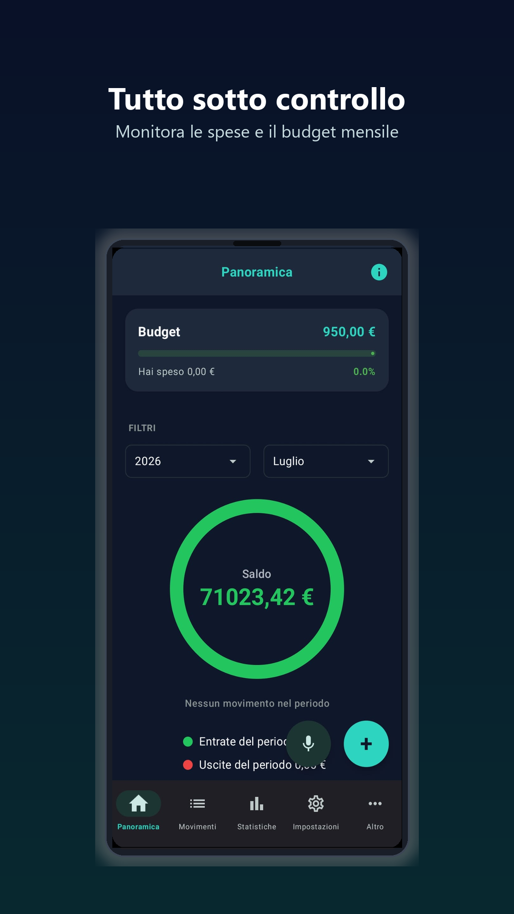
La nuova interfaccia con il pulsante microfono affiancato al "+"